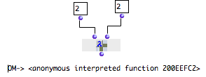

OpenMusic DocumentationHiérarchie de section : OM 6.6 User Manual > Visual Programming II > Evaluation Modes > Lambda Mode
OpenMusic DocumentationHiérarchie de section : OM 6.6 User Manual > Visual Programming II > Evaluation Modes > Lambda Mode
Navigation : page précédente | page suivante
Attention, votre navigateur ne supporte pas le javascript ou celui-ci à été désactivé. Certaines fonctionnalités de ce guide sont restreintes.
Lambda Mode
Properties
The "lambda" mode plays a major part in the design of complex programs, and is used in various configurations. Boxes on "lambda" mode return functions. Hence, a box on "lambda" mode doesn't perform a calculation and yields a result, but will yield itself as a function when the evaluation takes place. |

The om+ box doesn't return the result of an addition, but an "anonymous" function.
|
Procedure
To set a box on "lambda" mode, select it, press b and click twice on the upper left cross. A small λ letter  icon appears.
icon appears.
Use
Higher Order Functions and Functional Arguments
Some functions wait for arguments that are not as simple as numbers or lists. In particular, higher-order functions are functions whose arguments are functions themselves, or which return functions as resulting values.
To be used as a functional argument, a box must be set on "lambda" mode. It is then called a "lambda function".
Higher-Order Programming in OM
Example
For instance, apply is a higher-order Lisp function that applies a functional argument, which must be a function, to a second argument, which must be a list containing the arguments to pass to the function. Here, apply applies + to a list of numbers. |

|
Références :
Plan :
Navigation : page précédente | page suivante
A propos...(c) Ircam - Centre Pompidou